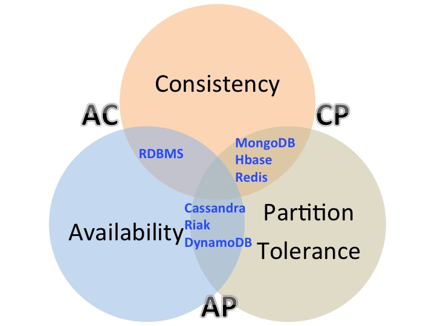
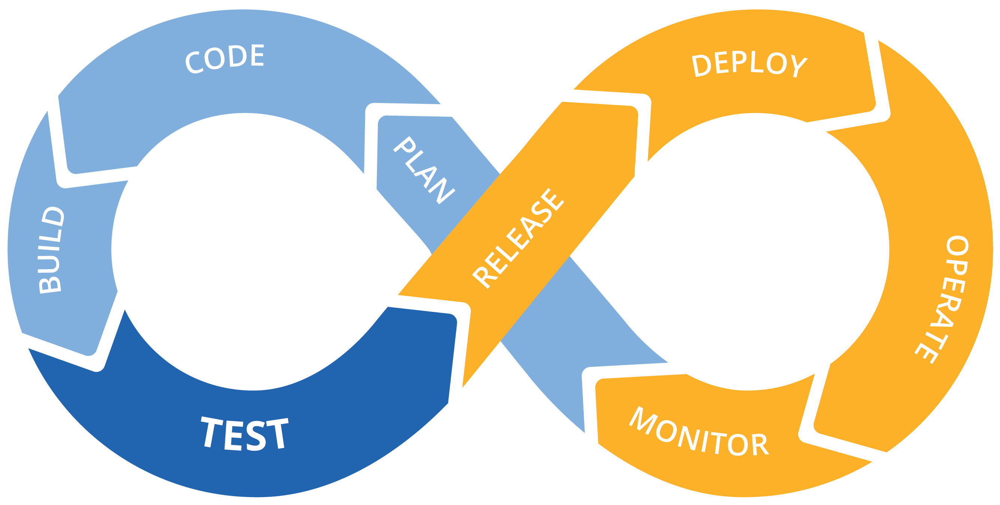

Architectures Orientées Web
L'application à installer
- On la télécharge (ou on insère un CD / DVD)
- Puis on l'installe sur son ordinateur
- Exemple : Word ou Excel
| Avantages | Inconvénients |
|---|---|
| Utilisable offline | Livraison Installation Mises à jours Dépendant de l'OS |
Architectures orientées services
- C'est une représentation logique d'une activité métier avec un résultat attendu.
- Elle est auto-contenue.
- C'est une boite noire pour ses utilisateurs.
- Elle peut être composée de sous-services.
- Exemple : Google Docs
Principes fondateurs
- La valeur métier est plus importante que la stratégie technique.
- L'inter-operabilité intrinsèque est plus importante que les intégrations spécifiques.
- Il vaut mieux avoir des services génériques partagés que des implémentations spécifiques.
- La flexibilité est plus importante que l'optimisation.
- Il vaut mieux rafiner progressivement qu'essayer de faire parfait dès le début.
- Contractualisés
- Autonomes
- Accessibles
- Boîtes noires
- Granulaires
- Composables
- Réutilisables
- (Auto-découvrables)
- (Composés de services qui n'etaient pas prévus pour une architecture SOA)
| Avantages | Inconvénients |
|---|---|
| Pas de livraison Pas d'installation Mises à jours automatiques Indépendant de l'OS |
Nécessite une connection internet |
Services Web
Representational state transfer (REST)
- Style d'architecture
- Client-Serveur
- Sans état
- Mise en cache
- Une interface uniforme : identification des ressources, manipulation des ressources à travers des représentations, message auto-descriptif, hypermédia comme moteur d'état de l'application
API Web
- Basé sur le protocole HTTP
- Un verbe = une action
- GET, POST, PUT, DELETE, PATCH
- Permet de manipuler les ressources à partir d'une application client ou d'un autre service
Contrat / documentation d'API
- Autonomes
- Accessibles => DNS
- Boîtes noires
- Granulaires
- Composables
- Réutilisables
- (Auto-découvrables)
- (Composés de services qui n'etaient pas prévus pour une architecture SOA)
L'architecture micro-services
- Apparue au début de la décénie
- Popularisée par Netflix
- Considérée (a tord) comme un remède miracle
Principe
La philosophie est identique à celle du monde UNIX : "Faire une seule chose mais bien le faire".- Les services sont petits et ne font qu'une seule fonction.
- Le déploiement et le test automatique sont indispensables.
- Durant la conception, il faut vivre avec les erreur et les pannes, quite à en provoquer.
- Chaque service est élastique, résistant, composable, minimal et complet.
| Avantages | Inconvénients |
|---|---|
| Maintenance simplifiée et moins coûteuse | Coût initial supérieur |
Exemple : redimensionnement de miniature
L'utilisateur charge une photo ou image pour son profil et celle ci ets redimensionnée automatiquement pour bien s'intégrer au site.Eviter les nano-services (1)
- Les micro-services trop petits sont un anti-pattern
- Surcharge de code écrit (et donc de bugs)
- Surcharge d'exécution : transformations, trafic réseau, ...
- Logique fragmentée : la fonctionnalité est distribuée sur plusieurs services => surcoût de conception et de maintenance
Eviter les nano-services (2)
- Packager une fonctionnalité en tant que librairie plutot que service
- Combiner la fonctionnalité avec d'autres pour avoir un service un peu plus conséquent
- Refactoriser le système : refaire son design ou mettre la fonctionnalité dans d'autres services existants
Architecture Web

Choix de la stack
Base de données
Automatisation
Devops
- development + operations
- Objectifs contradictoire : fonctionnalité vs stabilité
- Dévelopements, Déploiements, tests, déploiements, test, ...
- Feedback / amélioration rapide sur des petites itérations
- Mesures, analyses, surveillance
Amélioration continue
Développement

Build
- Objectif : préparer le livrable
- Déclenché au commit
- Peut se décomposer en plusieurs phases
- Si tous les indicateurs sont au vert, un livrable est créé
- Différents types : archive, conteneur, image, tag dans un SCM, ...
Tests
- Les tests unitaires font partie du développement
- Tests d'intégration
- Les tests sont programmés ou enregistrés
- Tests d'API et test d'UI
- Testcomplete, SoapUI, Selenium, ...
Release
- Le livrable a un code (peut être lié a un hash de commit)
- Le livrable est promu
- On peut avoir une étape intermédiaire : release candidate
- Mise a jour dans le gestionnaire de code (tag)
Déploiement
- Le livrable est installé dans un ou plusieurs environnements
- Processus automatisé : Ansible, Docker, ...
- Les configurations de déploiement peuvent être versionnées
- Bien maitriser la configuration des proxys
Exploitation
- Mise en place de contrôles et d'alertes
- Ajustement par rapport à la charge (Load balancing)
- Collecte d'indicateurs (Monitoring)
Avenement du cloud
Outils en ligne
- SCM : Gitlab, Github, ...
- Build : Gitlab, TravisCI, ...
- Registres docker : Gitlab, Dockerhub, ...
- Test, monitoring, ...
Hébergement de machines virtuelles
- Provisionnées en quelques minutes
- Peuvent être conséquentes et supporter beaucoup de machine
- Très facile de composer sa propre architecture / sous-réseau
- On peut s'adapter facilement aux variations et pics de charge
- Il faut des compétences d'opérationel
Hébergement de conteneurs
- Les conteneurs sont plus légers que les VM
- Conteneurs déployés en quelques secondes
- On ne s'occupe plus du matériel
- Très facile de composer sa propre architecture / sous-réseau
- On peut s'adapter encore plus facilement aux variations et pics de charge
- Compétences d'opérationel plus restreintes